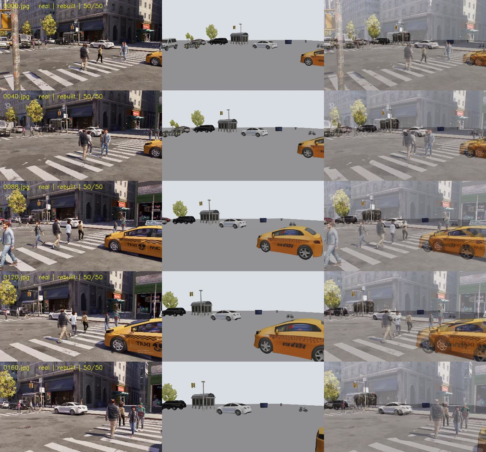
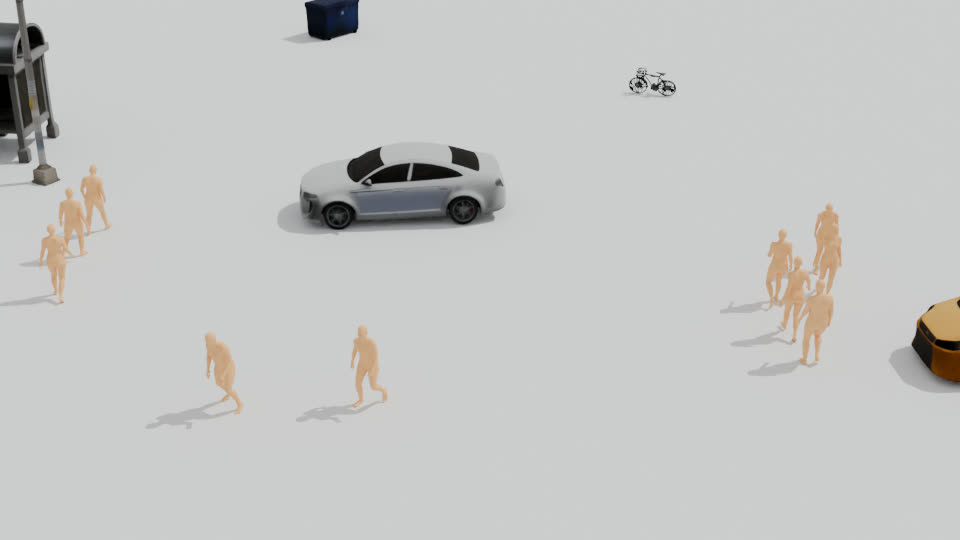
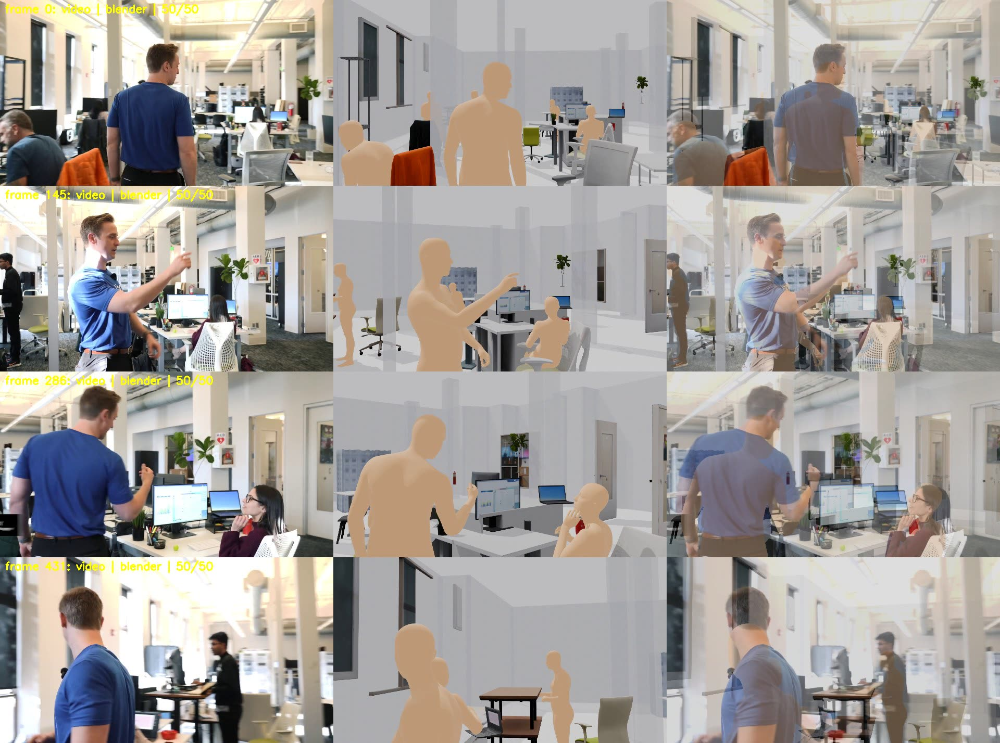
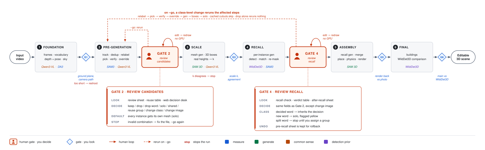
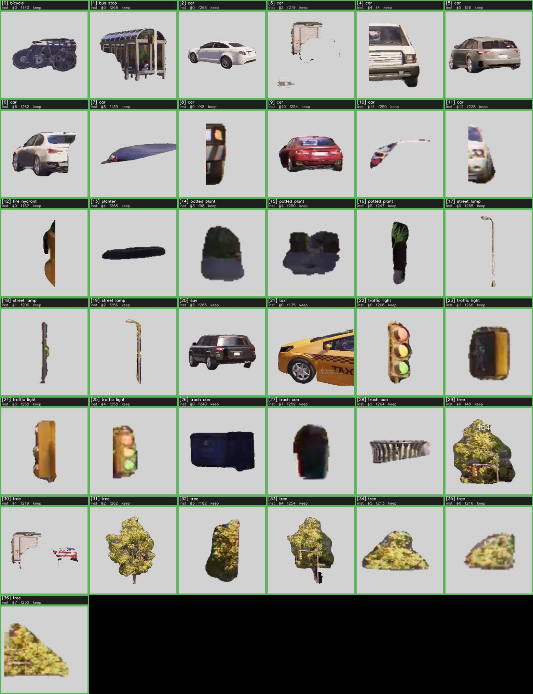

Monocular Video to Editable 3D Scene
Backend Pipeline Engineer, WarpEngine (Aug 2026 - Present). Scene data production for world-model training.
Project Overview
One real-world video goes in; an editable, metric-scale 3D scene comes out. Every object is its own mesh placed with real-world position, orientation and size; people in the footage become skinned, animated characters in the same scene with the original camera. Indoor and outdoor footage share one pipeline.
I designed and built the whole system: model selection, the geometry that ties the models together, the physics-based assembly, the human-in-the-loop gates and the FBX / Blender delivery. It has been validated end to end on dynamic indoor and outdoor scenes with camera motion and moving subjects.
Results
Each check clip shows the input video, the rebuilt scene rendered through the recovered camera, and a 50/50 blend of the two. If the blend lines up, positions, scale and camera are all right at once.
Street crossing (outdoor): taxi, cars, bus shelter, trees, 12 pedestrians


Open-plan office (indoor): desks, chairs, monitors, plants, room shell, 4 people with occlusion

Pipeline: five stages, five gates
Decisions are split by whether a machine can make them reliably. The pipeline runs automatically up to each gate, lays the numbers and images out on a web page, and asks for a human only where automated judgment is unreliable (is this cutout complete? is this tracked "person" really a person?). A changed decision reruns only the affected steps.

How it works
Measure position, generate shape, let common sense set scale
No single model can do this job. Qwen3-VL lists what is in the frame; SAM 3 tracks each instance through the video; Depth Anything 3 / VGGT give per-frame depth and camera pose so masks back-project into gravity-aligned 3D boxes; SAM 3D Objects generates a complete mesh (hidden back included) from one cutout; Qwen3-VL answers "how tall is this kind of thing" to fix absolute scale. Boxes own position and orientation, meshes own shape, priors own size. None of them is allowed to overrule another.
Scale and geometric calibration
Monocular depth is self-consistent but not metric: one car park came out 6.4x too small and looked fine in renders. Global scale is calibrated against VLM size priors and rejected if the per-class agreement is poor. Bad pose frames are caught by cross-frame depth checks and skipped. Two-level deduplication over 2D masks and 3D voxels removes the same object found under different words.
Dynamic humans and physics
A video 4D human pipeline (segmentation and tracking, diffusion-based occlusion completion, parametric body recovery) outputs temporally consistent people even when they walk behind each other, then aligns them into the scene frame. The room shell or the ground acts as a static collider; rigid-body simulation settles every object and pushes interpenetrating ones apart, so nothing floats and nothing overlaps.
Productionization
Single-entry driver, checkpoint resumption, status queries, quality gates between stages and a web review desk at each gate. Seven conda environments and about 250 GB of weights are reproducible from a setup doc plus patches against the upstream repos. Delivery is FBX for the scene, scene plus people with the original camera, one file per person, and a Blender project.
What a gate looks like
Gate 2 review sheet for the street scene: every candidate cutout with its class, the frame it was picked from and the VLM verdict. The reviewer keeps, drops, merges or re-labels in the browser; the pipeline reruns from the affected step.

Known limitations
- Person identity is position-based: if one person leaves and another stands in the same spot, they may be merged.
- Non-human objects tracked as "person" (a coat on a chair) are not removed automatically; they are dropped at the gate.